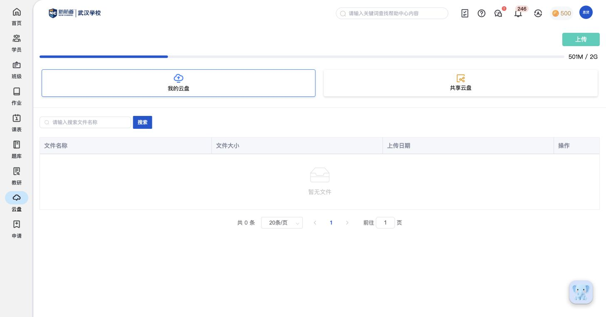
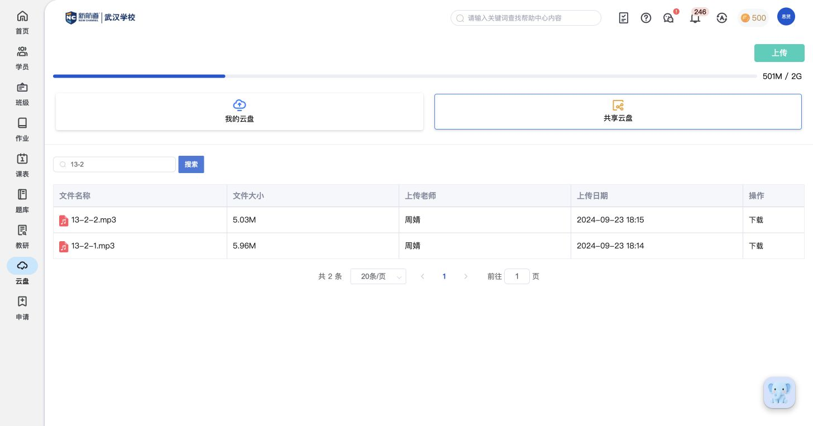
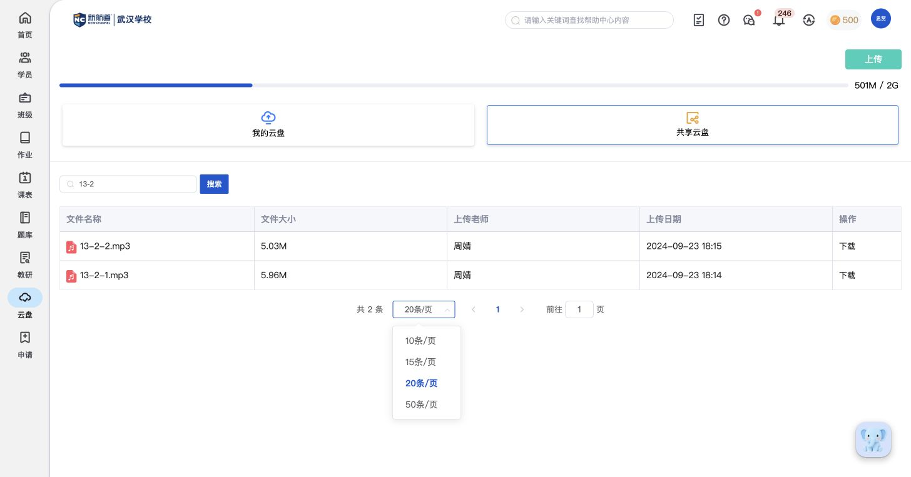
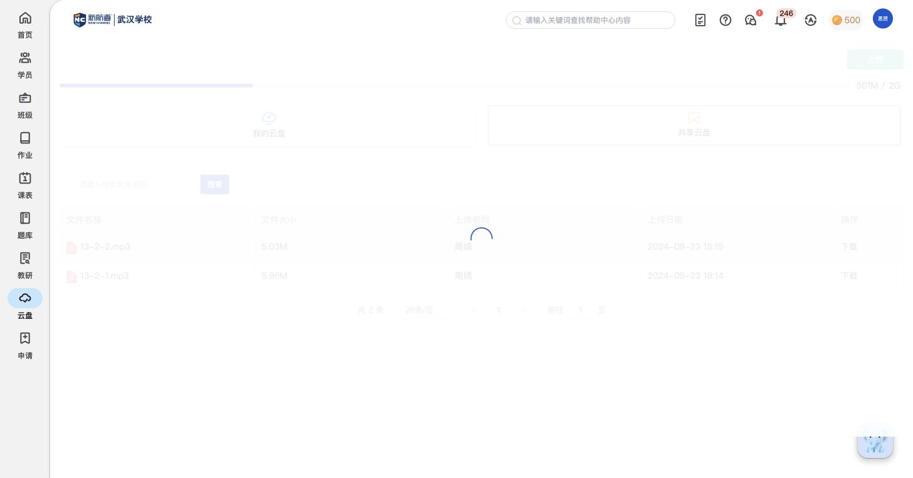

教学价值版 · 教师端实操依据 · 2026-10-23
云盘：教学文件
保存个人与共享的文档、音视频，供作业和大纲选用。文件保存与面向学生布置学习任务分开。
K41教学云盘
保存个人和共享教学文件，在布置任务或编排大纲时取用。
- 文件区分我的云盘与共享云盘；共享列表显示上传老师，已有PDF和MP3样例。
- 上传前可选择个人或共享范围；页面提供容量展示和文件下载。
- 要把文件交给学生学习，需要从作业或大纲的资源入口选用；云盘本页未见直接布置按钮。
对比自己产品时看：教学文件是否既能个人保存、团队共享，又能在实际教学任务中复用。
依据范围：已见上传前配置；个人文件列表为空，上传完成后管理、共享权限细节待补。
其他报告：音视频与课件任务 · 在大纲中关联文件
操作依据（定位到本页记录）
操作依据：CD01 切换个人与共享文件
操作依据：CD02 查看云盘容量
操作依据：CD03 按文件名称搜索
操作依据：CD04 分页浏览文件
操作依据：CD05 下载共享文件
操作依据：CD06 选择上传范围与文件
操作依据：CD07 将云盘资料用于作业与大纲
F113 从个人或共享云盘选资源 · HW31
操作依据
保留7组功能观察、6张关联截图。重要截图已在正文直接展示，基础操作不另列为核心功能。
辅助截图（按功能分组，按需查看）
教学云盘

D01｜云盘首页：我的/共享云盘、容量、上传、文件搜索列表分页（点击查看原图）
D03｜文件名搜索13-2后列表仅保留两个MP3；显示匹配总数与分页（点击查看原图）
D04｜云盘分页：10/15/20/50条每页、总数与跳页（点击查看原图）
D07｜恢复共享云盘完整文件列表；文件名点击未出现新的阅读或播放页（点击查看原图）测试记录与状态变化
- 仅查看已有文件、搜索和上传窗口；未选择文件或执行上传。 依据：CD06
逐项操作记录与截图（本页查看）
以下保留调研当时的操作与观察，旧状态不代表后续补充后的最新结论。点击截图编号可在本页查看；完整页面文字可按需单独打开。
CD01 切换个人与共享文件
功能内容：顶部有我的云盘、共享云盘两张入口；个人列表包含文件名称、大小、上传日期、操作；共享列表额外显示上传老师；共享样例包含PDF和MP3，文件行提供下载入口
实际操作：分别查看个人空列表与共享资源列表。
范围说明：个人云盘当前无文件，不能据此推定个人文件行的改名、共享、删除等操作。
对应功能：教学云盘
截图：D01（本页） · D02（本页）
完整页面观察：D01 ↗ · D02 ↗
CD02 查看云盘容量
功能内容：顶部容量条展示已用量和总容量；当前页面显示501M / 2G
实际操作：读取个人和共享页共同显示的容量条。
范围说明：只记录容量展示，不推定统计归属、计费方式或空间扩容规则；样例数值不是固定额度承诺。
对应功能：教学云盘
截图：D01（本页）
完整页面观察：D01 ↗
CD03 按文件名称搜索
功能内容：搜索框提示请输入搜索文件名称，旁边有搜索按钮；搜索后显示匹配文件与总条数；可清空关键词重新搜索
实际操作：在共享云盘搜索13-2，看到两个MP3；随后清空恢复。
范围说明：按实际页面记录；未上传、共享或删除文件。
对应功能：教学云盘
截图：D03（本页）
完整页面观察：D03 ↗
CD04 分页浏览文件
功能内容：每页可选10、15、20、50条；底部显示总条数、上一页、页码、下一页和跳页输入
实际操作：展开每页条数菜单，查看分页控件。
范围说明：当前样例只有一页，没有把禁用的上下页按钮解释为功能缺失。
对应功能：教学云盘
截图：D04（本页）
完整页面观察：D04 ↗
CD05 下载共享文件
功能内容：共享文件行的操作列提供下载；文件名、大小、上传人、上传日期可用于确认目标文件
实际操作：查看PDF与MP3行的下载入口，尝试点击MP3名称。
范围说明：本次没有点击下载；点击文件名未出现新的播放或阅读页，不能据此补写在线预览能力。
对应功能：教学云盘
截图：D02（本页） · D07（本页）
完整页面观察：D02 ↗ · D07 ↗
CD06 选择上传范围与文件
功能内容：上传按钮打开上传文件窗口；窗口可选择我的云盘或共享云盘，提供选择文件按钮和待添加文件区；页面提示最大支持500M文件，建议先压缩媒体文件
实际操作：打开上传窗口，切换共享目标，随后关闭。
范围说明：没有选择本地文件或上传；未查看文件选入后的队列、进度、失败重试或上传完成操作。
对应功能：教学云盘
截图：D05（本页）
完整页面观察：D05 ↗
CD07 将云盘资料用于作业与大纲
功能内容：作业和教研的文件选择入口会使用个人／共享云盘资源；该一级页面负责浏览与上传，当前未见直接布置按钮；选文件与关联的共用说明见作业篇
实际操作：对照本页共享PDF列表与已记录的作业、大纲文件选择器。
范围说明：这是跨页面资源关系，不能理解为从云盘列表直接一键布置；共用选择器不重新调研。
对应功能：教学云盘
截图：D02（本页）
完整页面观察：D02 ↗
旧版独立记录页仅作归档保留，常规阅读无需进入。打开旧记录归档 ↗